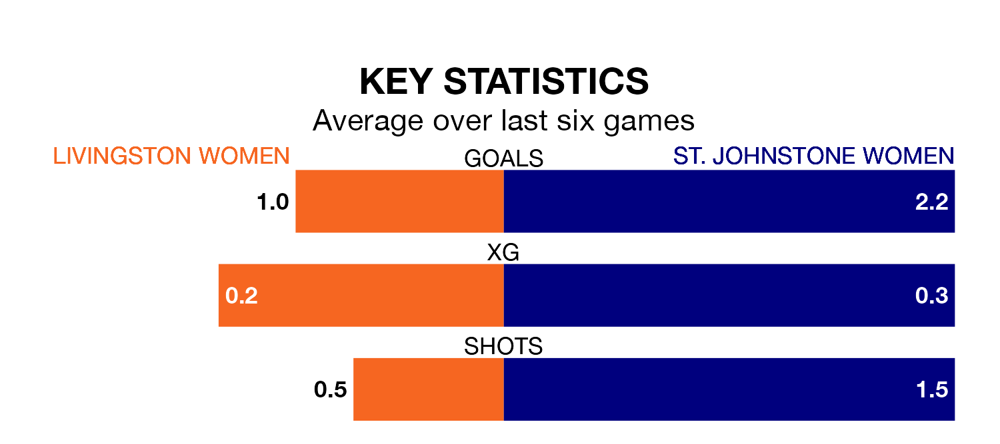

Relegation candidates St. Johnstone Women face a challenge away against high-flying Livingston Women at the Tony Macaroni Arena on Sunday.
St. Johnstone Women are fifth in the SWPL 2 table, and have picked up nine wins and one draw in their 23 games to date.
Livingston, meanwhile, are third in the standings with 35 points, having won 10 and drawn five, and are 24 points behind table-toppers Queen's Park Women.
With 38 goals in 23 games so far this season, Livingston are scoring at below the league average rate with 1.7 goals per game. But they are conceding fewer than average too, letting in 35 goals at a rate of 1.5 per game.
St. Johnstone, meanwhile, are above average scorers, with 2.0 goals per game, compared to a league average of 1.8. They have also conceded 2.0 goals per game.
The home side are in disappointing form in SWPL 2, with one win and three draws from their last six games.
With three wins and a draw over that period, the visitors' form is better – they have taken 10 points from 18, compared to Livingston's six.
In the last five years, Livingston and St. Johnstone have played each other on four occasions. They won two each.
On average, Livingston scored 2.8 goals and St. Johnstone 1.8 in those matches.
Their last meeting was on January 28, when St. Johnstone won 2-0 at home.
Livingston's last match was on April 14, a 3-3 draw against Boroughmuir Thistle, with getting the goals for Livingston.
St. Johnstone lost 3-2 against Gartcairn Women last time out, also on April 14, with on the scoresheet.
Updated: 11:31 (UTC), 15/04/24